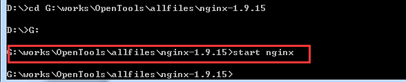

出现启动失败问题，一般是端口冲突问题，比如win7下的IIS已经启动并占用了80端口。在config目录下找到nginx.conf，打开文件进行如下修改：

title: Nginx与tomcat组合的简单使用
date: 2019/6/19 20:46:25
categories:
#Nginx与tomcat组合的简单使用
文章版权由作者李晓晖和博客园共有，若转载请于明显处标明出处：http://www.cnblogs.com/naaoveGIS/
##1.背景
项目中瓦片资源越来越多，如果提高瓦片的访问效率是一个需要解决的问题。这里，我们考虑使用Nginx来代理静态资源进行初步解决。
##2.Nginx简介
ginx (“engine x”) 是一个高性能的HTTP和反向代理服务器，也是一个IMAP/POP3/SMTP服务器。Nginx是由Igor Sysoev为俄罗斯访问量第二的Rambler.ru站点开发的。
何为反向代理呢？即以代理服务器来接受internet上的连接请求，然后将请求转发给内部网络上的服务器，并将从服务器上得到的结果返回给internet上请求连接的客户端，此时代理服务器对外就表现为一个服务器。
而Nginx主要完成的工作就是反向代理，比如我们向一台服务器的80端口发送了请求，该请求首先由Nginx监听到，其接受到请求内容后再转发给其他服务器，其他服务器处理完后再将结果传送给Nginx，最后由Nginx来统一返回给初始请求端。
Nginx最常见的使用方法就是作为静态资源伺服器，比如将CSS，JS，html，htm等文件进行缓存处理。
##3.环境搭建
###3.1下载
首先在官网中下载所需版本：http://nginx.org/en/download.html。目前我使用的版本是windows环境下的1.9.15。
下载完毕后，解压。
###3.2开启Nginx
开启Nginx有两种方法，一种是直接点击开启，一种是命名行开启。
a.点击开启：
b.命名行开启：
开启成功后，在资源管理中可以看到：
###3.3常见问题—启动失败
出现启动失败问题，一般是端口冲突问题，比如win7下的IIS已经启动并占用了80端口。在config目录下找到nginx.conf，打开文件进行如下修改：
##4.初步使用
###4.1用网页测试是否启动成功
其中的配置为：
其表示监听8010端口请求后，会首先去html文件夹下寻找index.html页面。
###4.2详解部分参数含义
listen：表示当前的代理服务器监听的端口，默认的是监听80端口。注意，如果我们配置了多个server，这个listen要配置不一样，不然就不能确定转到哪里去了。
server_name：表示监听到之后需要转到哪里去，这时我们直接转到本地，这时是直接到nginx文件夹内。
location：表示匹配的路径，这时配置了/表示所有请求都被匹配到这里
root：里面配置了root这时表示当匹配这个请求的路径时，将会在这个文件夹内寻找相应的文件，这里对我们之后的静态文件伺服很有用。
index：当没有指定主页时，默认会选择这个指定的文件，它可以有多个，并按顺序来加载，如果第一个不存在，则找第二个，依此类推。
###4.3配置tomcat跳转
通过proxy_pass配置请求转发地址。即当访问localhost的8010端口时，请求会跳转至localhost的8080端口处。修改完Nginx的配置后不需要重启Nginx，输入如下命令即可：
测试如下：
##5.进一步使用
###5.1静态文件分离配置
上面我们直接试了一个小例子，让nginx进行转发，即所谓的反向代理。但实际上我们的需求不会是这样的，我们需要分文件类型来进行过滤，比如jsp直接给tomcat处理，因为nginx并不是servlet容器，没办法处理JSP，而html,js,css这些不需要处理的，直接给nginx进行缓存。
下面我们来进行一下配置，让JSP页面直接给tomcat，而html,png等一些图片和JS等直接给nginx进行缓存。
这时最主要用的还是location这个元素，并且涉及到一部分正则，但不难，具体配置如下：
此时再直接输入localhost:8010，则会报404错误了。但是输localhost:8010/index.jsp，则一样可以跳转至tomcat首页中。
###5.2 负载配置
当一台服务器出现故障后，我们需要将请求自动转向另一台服务器，此种需求该如何配置呢？利用Nginx也是比较方便能够实现，具体配置如下：
注意，上面还加上了一个weight属性，此属性表示各服务器被访问到的权重，weight越高访问到的几率越高。
###5.3其他配置
###5.4关闭Nginx